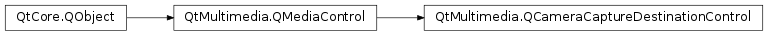

QCameraCaptureDestinationControl¶
Detailed Description¶
The
PySide2.QtMultimedia.QCameraCaptureDestinationControlclass provides a control for setting capture destination.Depending on backend capabilities capture to file, buffer or both can be supported.
The interface name of
PySide2.QtMultimedia.QCameraCaptureDestinationControlisorg.qt-project.qt.cameracapturedestinationcontrol/5.0as defined inQCameraCaptureDestinationControl_iid().See also
-
class
PySide2.QtMultimedia.QCameraCaptureDestinationControl([parent=nullptr])¶ Parameters: parent – PySide2.QtCore.QObjectConstructs a new image capture destination control object with the given
parent
-
PySide2.QtMultimedia.QCameraCaptureDestinationControl.captureDestination()¶ Return type: PySide2.QtMultimedia.QCameraImageCapture.CaptureDestinationsReturns the current capture destination. The default destination is
QCameraImageCapture.CaptureToFile.
-
PySide2.QtMultimedia.QCameraCaptureDestinationControl.captureDestinationChanged(destination)¶ Parameters: destination – PySide2.QtMultimedia.QCameraImageCapture.CaptureDestinations
-
PySide2.QtMultimedia.QCameraCaptureDestinationControl.isCaptureDestinationSupported(destination)¶ Parameters: destination – PySide2.QtMultimedia.QCameraImageCapture.CaptureDestinationsReturn type: PySide2.QtCore.boolReturns true if the capture
destinationis supported; and false if it is not.
-
PySide2.QtMultimedia.QCameraCaptureDestinationControl.setCaptureDestination(destination)¶ Parameters: destination – PySide2.QtMultimedia.QCameraImageCapture.CaptureDestinationsSets the capture
destination.
© 2018 The Qt Company Ltd. Documentation contributions included herein are the copyrights of their respective owners. The documentation provided herein is licensed under the terms of the GNU Free Documentation License version 1.3 as published by the Free Software Foundation. Qt and respective logos are trademarks of The Qt Company Ltd. in Finland and/or other countries worldwide. All other trademarks are property of their respective owners.